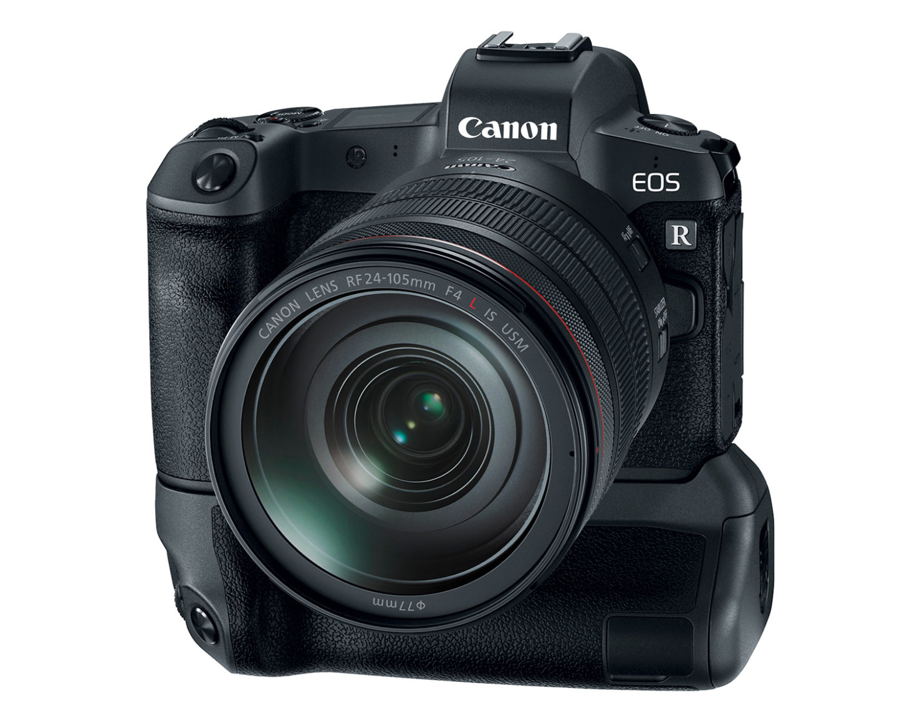
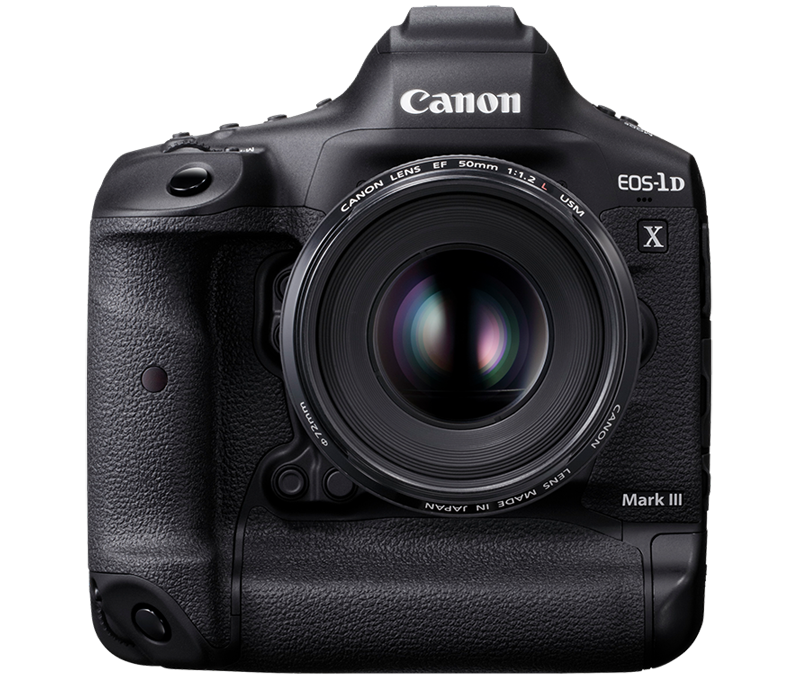

Canon News

Top 10 Canon Cameras
- Canon EOS 5DSr
- Canon EOS 6D Mark II
- Canon PowerShot G1
- Canon EOS R
- Canon EOS Rebel T7i
- Canon EOS 5D Mark IV
- Canon EOS 80D
- Canon EOS 1DX Mark II
- Canon EOS IXUS 185
- Canon EOS 4000D/T100

Top 10 Video Cameras
- JVC GY -HM650 / HM620/HM600 HD
- Panasonic AG-HPX250
- Sony HXR-NX5U NXCAM
- Sony PMW100 One XDCAM
- Canon XA20/25
- Canon XH-A1S 3CCD HDV
- Panasonic 4K Camcorder
- Panasonic Lumix GH5
- Sony RX100 VII
- Canon Vixia HF R800

My Weekly Diet
|
Monday |
Tuesday |
Wednesday |
Thursday |
Friday |
Saturday |
Sunday |
| Breakfast |
Toasted bread, Egg, Mlik |
Toasted bread, Egg, Mlik |
Toasted bread, Egg, Mlik |
Toasted bread, Egg, Mlik |
Toasted bread, Egg, Mlik |
Toasted bread, Egg, Mlik |
Toasted bread, Egg, Mlik |
| Lunch |
Rice Meal |
Rice Meal |
Rice Meal |
Rice Meal |
Rice Meal |
Rice Meal |
Rice Meal |
| Dinner |
Ham and Cheese Sandwich |
Ham and Cheese Sandwich |
Ham and Cheese Sandwich |
Ham and Cheese Sandwich |
Ham and Cheese Sandwich |
Ham and Cheese Sandwich |
Ham and Cheese Sandwich |
| Midnight Snack |
Piatos |
Lay's |
Nova |
Tortilla chips |
Tortillos |
Piatos |
Nova |

Top 3 Advice:
Take time to know yourself.
A narrow focus brings big results.
Be patient and persistent.